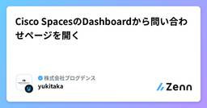

株式会社プログデンスのフィード
https://zenn.dev/p/progdence
株式会社プログデンス／BtoB向けのITソリューションを提供する企業です。 技術スタック: SASE / Prisma Access / Zscaler / Netskope / Cato Networks / Tanium / M365 / Cisco / Automatio
フィード

Cisco SpacesのDashboardから問い合わせページを開く
株式会社プログデンスのフィード
Cisco SpacesのDashboardから問い合わせページを開くと、必要な情報の一部が入力されて便利だったため紹介します。!2026年07月頃の情報です。 問い合わせを始める前にCisco Spacesの問い合わせは、他の主要なCisco製品と同じでSupport Case Manager (SCM)を介して行われます。SCMで「問い合わせ時の言語 (英語や日本語)」の設定に関しては、Communityの記事を参照してください。Support Case Manager(SCM) ケース作成ガイド - Cisco Communityhttps://community...
4日前

Cisco SpacesのテナントをMeraki Dashboardから作成する
株式会社プログデンスのフィード
Cisco Spacesのテナントをユーザー側で作成したい場合は、Meraki Dashboard側から実施できます。マルチテナントのサービス事業者でなければ、「Cisco Spacesのテナントの作成」は頻繁に発生する作業ではないと感じたため、画面キャプチャ付きで操作方法をまとめました。 検証時の情報本記事は2026年7月時点で、Wi-Fi 7 AP (CW917xシリーズ)とCisco Wireless Essentialsライセンスを用いて検証しています。 事前の準備Cisco Spacesのテナントを新規で作成するにあたって、事前に確認しておいた方が良い点があります...
9日前
Cisco IOS XEのRADIUSにおけるトランザクション レベルのFailover
株式会社プログデンスのフィード
Cisco IOS XEのRADIUSにおいて、障害時のトランザクション レベルのFailoverを扱います。RADIUSのトランザクションとは、端末からのSSH接続などを契機とする「IOS XEデバイスとRADIUS Server間での一連のやり取り (認証処理の単位)」のことです。RADIUSのトランザクション RADIUSにおける障害検知の要素まずRADIUSの障害検知においては「Dead Criteria」と「トランザクション レベルのFailover」の2つの要素があるのが重要です。RADIUSにおける障害検知の要素!チーム内などに共有しやすいように、「イメ...
10日前
Cisco IOS XEでパスワードをAESで暗号化する
株式会社プログデンスのフィード
Cisco IOS XEにおいてコンフィグのパスワード部分はAESで暗号化できます。本記事では、設定方法や運用における留意点などを整理します。まずはAESによる暗号化前後 (Before & After)の例を掲載します。項目値平文 (Before)enable password ENABLE-PASSWORDAESで暗号化 (After)enable password 6 YMbaL_gNAE[MIRRQdEMScHAdeQRQe\GPTQTEGYiNHIAAB!パスワードの暗号化と言えば「service password-encryp...
11日前
Cisco IOS XEにおけるSCEP設定のチューニング要素
株式会社プログデンスのフィード
Cisco IOS XEにおいてSCEPを設定する際の主要なチューニング要素を整理しました。トピック別にまとめています。 関連記事基本的なSCEPの設定の流れは下記の記事で解説しており、併読できるようにチューニング要素を本記事にまとめた背景があります。 「crypto pki server」は同名の「RSA Key Pair (Label名)」を参照する「crypto pki server」は同名の「RSA Key Pair (Label名)」を参照する「crypto pki server」はRSA Key Pairを紐づける必要があります。ただし、「crypto p...
24日前
Cisco IOS XEにおけるSCEPによるデバイス証明書の発行 (SCEP-Based Enrollment)
株式会社プログデンスのフィード
Cisco IOS XEでSCEPを用いてデバイス証明書を発行する方法を整理します。 前提知識本設定例は「自己署名証明書の発行」の発展形となっているため、事前知識は下記の記事を参考にしてください。Cisco IOS XEデバイスでの自己署名証明書の発行https://zenn.dev/progdence/articles/4a374bd9b159be 関連知識SCEPの主要なチューニング要素については別の記事で扱っています。本記事を読み進めるうえで「特に気になりそうな点」を併読できるようにまとめています。 SCEP-Based Enrollmentのユースケース...
24日前
[Cisco CML] WorkbenchにおけるNode座標の指定方法
株式会社プログデンスのフィード
Cisco CMLのWorkbenchではNodeの配置をX座標・Y座標で管理しています。普段はWorkbenchからドラッグ&ドロップで配置できるため意識することはありません。しかし、APIやTerraform Providerなどを用いて自動化する際は、座標を指定する必要が出てきます。 座標の考え方座標はモニターと同じように、左上が「原点 (X: 0, Y: 0)」となります。なお、マイナス座標の指定も可能です。Cisco CMLにおけるWorkbenchの座標 座標の意識が必要な具体的なケース一例として、Terraformの「cml2 Provider」で...
25日前
[Cisco CML 2.10] コンテナ イメージのrefplatの配布先がGitHubへ変更
株式会社プログデンスのフィード
Cisco CMLはVersion 2.10からコンテナのイメージはGitHub上で公開されるようになりました。コンテナの機能自体はVersion 2.9から対応しており、以前はCisco Software Download上で提供されるrefplat (Reference Platform)のISOにコンテナのイメージが含まれておりました。GitHub上で公開されているので、独自にカスタマイズしてのビルドも行いやすくなっております。 情報源The container images built for CML 2.10 and forward are created on ...
2ヶ月前
[Cisco CML 2.10] Wireless Supportの概要と動作確認
株式会社プログデンスのフィード
Cisco CMLのVersion 2.10にて「Wireless Support」の機能が追加されました。Wireless APとWireless Clientの動作画面Wireless SupportはCMLの複数のリリースに渡って段階的に導入される予定となっており、Version 2.10ではその初期フェーズの機能の追加である旨がRelease Notesに記載があります。Nodeのイメージとしては下記の2種類が追加されています。Wireless AP: 実態はUbuntuベースの「hostapd」Wireless Client: 実態はUbuntuベースの「wp...
2ヶ月前
[Cisco CML 2.10]MCPサーバを使い、「Claudeチャット」だけで検証環境を作成する
株式会社プログデンスのフィード
はじめにプログデンスの圓佛です。Cisco.comページ上は「11-May-2026」付けになっていますが、日本時間では5/14頃にCisco CMLの最新版であるバージョン2.10がダウンロード可能になっていました。CML 2.10の新機能として「MCPサーバの統合」が挙げられます。MCPサーバについては以下のURLで言及されています。Model Context Protocol (MCP) Server for Better AI Integration with CML (developer.cisco.com)Speak Your Lab into Existe...
2ヶ月前
Cisco IOS XEを認証局 (CA)として構成し証明書を発行する
株式会社プログデンスのフィード
Cisco IOS XEを認証局 (CA: Certificate Authority)として動かすための設定を扱います。Cisco IOS XEを認証局 (CA)として構成し証明書を発行する!本記事では認証局 (CA)側を扱っておりますが、それとは別にサーバー証明書を発行したいCisco IOS XEデバイスがある場合は、下記の記事を参考にしてください。 サンプルの構成本記事の内容は下記の環境で検証を行っております。CML-P Version 2.8Catalyst 8000V (Cisco Modeling Labs版) v17.15.1a CA (Ce...
2ヶ月前
Cisco IOS XEでCSRを作成してサーバー証明書を取得する
株式会社プログデンスのフィード
Cisco IOS XEデバイスにおいて、CSRの作成からサーバー証明書の取り込みまでの一連の手順を整理します。概要図Cisco IOS XEデバイス全般に通ずる汎用的な手順とするために、本記事ではCLIの設定方法を扱っています。なお、Wireless LAN ControllerであるCatalyst 9800に関してはWeb UIからの設定方法もあります。認証局 (CA)側の作業は、別記事を参照する形で記載しております。 作業の前提Cisco IOS XEデバイスで「CSR (Certificate Signing Request)の作成」を行います。補足です...
2ヶ月前
Cisco IOS XEでWeb UI (HTTPS Server)をローカル認証で有効化
株式会社プログデンスのフィード
Cisco IOS XEでWeb UIをローカル認証で有効化する方法と、付随する情報を整理しました。R&S系の製品ではWeb UIは不要な機能として無効化されるケースが多々あります。しかし、Wireless LAN ControllerであるCatalyst 9800では、SSIDなどの設定をコマンドを覚えずとも視覚的に行えるのでWeb UIによる操作が主体になりやすいです。C9800-CL v26.1.1のWeb UI認証方式は、Cisco IOS XEデバイス内部の「username」の資格情報を参照するローカル認証の参考例となっております。 検証時の情報昔から...
3ヶ月前
Catalyst 9800のWeb UI用のサーバー証明書の指定
株式会社プログデンスのフィード
本記事では、Catalyst 9800におけるWeb UI用サーバー証明書に関する挙動と、運用上の注意点について解説します。Catalyst 9800のWeb UIにHTTPS (443/tcp)で接続するには、サーバー証明書が必要になります。この点は、一般的なWeb Serverの仕組みと変わりありません。そしてサーバー証明書は「ip http secure-server」でWeb UIを有効化すると、自動的に自己署名証明書が生成されるようになっています。デフォルトではWeb UIに紐づく証明書 (厳密にはTrustpoint)は明示的には指定されていません。明示的な指定がない場...
3ヶ月前
C9800-CL (仮想版)におけるAP Certificateの情報整理
株式会社プログデンスのフィード
概要本記事ではC9800-CL (仮想版)におけるAP Certificateの理解に必要な情報を整理します。まず前提として、Catalyst 9800ではWMI (Wireless Management Interface)に対して、Trustpointを紐付ける必要があります。補足ですが、WMIは「無線APとCAPWAPで通信する役割」を持つInterfaceです。WMIにTrustpointが紐付いていないと無線APがJoinできません。TrustpointはCisco IOS XEデバイスで証明書を扱うための設定です。AP Certificateは仮想版のC...
3ヶ月前
Cisco IOS XEのcopyコマンドでHTTPSによるファイル転送
株式会社プログデンスのフィード
Cisco IOS XEの「copy」コマンドにおいて、HTTPS (443/tcp)でファイルを転送する場合に必要な要素を整理します。Cisco IOS XEのcopyコマンドでHTTPSによるファイル転送 執筆背景執筆時の2026年03月時点で、Cisco IOS XEでは「Insecureな(安全でない)管理用プロトコルの段階的な廃止」が予定されているため、今後はHTTPSを用いたファイル転送の機会が増える可能性があります。Communityの記事が日本語で分かりやすいです。IOS XE Router / Switch : Insecure な管理用プロトコルの段階的...
4ヶ月前
Windowsのマイク設定を見直して、Teams会議の音を改善しよう
株式会社プログデンスのフィード
はじめにTeams会議で、「声が聞き取りづらい」「ノイズを拾っている」と感じたり、指摘を受ける場面を多く見かけます。この記事では、Teams会議に参加する際のマイク設定やTeamsの設定を紹介します。皆さんの会議の音質を向上させ、より議論に集中できるようになることを期待しています。 音質を上げる必要性音質が低いと、以下のような悪影響が出てしまいます。発言が相手に伝わらない聞き直している時間を消費する文字起こしに記録されないマイクの音質は、自分自身では気づきにくいです。他の人から「聞き取りづらい」という反応があった場合は、本記事を参照して設定の見直しを行ってく...
7ヶ月前
Cisco IOS XEにおけるRADIUS Serverの障害検知
株式会社プログデンスのフィード
CiscoのIOS XEにはRADIUS Serverの障害検知のためにAAA Dead-Server Detectionの機能があります。多々ある設定要素の解釈を一致しやすくなるように、深掘りやイメージ化を行いました。 RADIUSにおける障害検知の要素まずRADIUSの障害検知においては「Dead Criteria」と「トランザクション レベルのFailover」の2つの要素があるのが重要です。RADIUSにおける障害検知の要素本記事では、2つある観点のうちの「Dead Criteria」にスポットを当てて深掘りします。もう一方の「トランザクション レベルのFailo...
7ヶ月前
Microsoft 365 ライセンスの違いによる機能差
株式会社プログデンスのフィード
はじめに多くの企業・組織でMicrosoft 365が利用されていますが、「使いこなせていない」と感じている方は多いのではないでしょうか。この記事では、自分にどのようなライセンスが付与されているかを確認し、どのアプリが利用できるかを知る方法と、管理面では、どのような違いがあるかについてご紹介します。 自分のライセンスの見方自分にどのようなライセンスが付与されているかは、以下の手順で確認することができます。Microsoft 365 トップページ (Microsoft 365 Copilot ページ) にアクセスするアプリメニューより、インストール画面に移動するサ...
7ヶ月前
CVE-2025-55182(Reactの脆弱性)を修正したDify 1.10.1-fix1リリース
株式会社プログデンスのフィード
はじめにプログデンスの圓佛です。CVEスコアが最大の「10」であるReactの脆弱性が報告されています。CVE-2025-55182CVE-2025-55182(facebook)Critical Security Vulnerability in React Server ComponentsDifyもReactを利用している為、影響を受けますが早速、問題修正したv1.10.1-fix.1がリリースされています。リリースノートには以下の記載があります。Security/deps: backend bumps pyarrow 17.0.0, werkzeug 3.1...
8ヶ月前